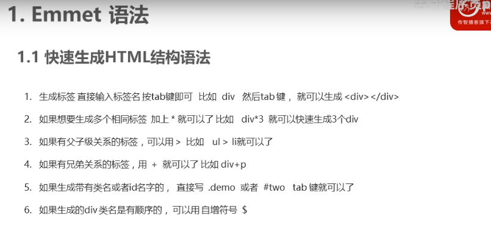

css伪类用来向选择器添加特殊的效果 常见伪类分类： 1.动态伪类 :link,:visited,:hover,:active,:focus, 2.结构伪类 :nth-child(),:first-child,:last-child 3.否定伪类 :not() 4.元素状态伪类 :enabled,:disabled,:checked
主要是用在a元素上， a:link，表示没访问过的链接， a:visited，表示已经访问过的链接 a:hover，表示鼠标放在链接上但是没点击 a:active，表示鼠标点击链接但是没松开时也就是点击鼠标时 注意：:hover必须放在:link和:visited的后面才能完全生效，:active必须放在:hover后面才能生效。 :hover，:active也可以用在其它元素上 :focus，用在输入框获取焦点
我是超链接:nth-child(n)，指定选中所有的子元素，从body元素开始。 选择器:nth-child(2n)，指定选择器名且作为偶数子元素的元素，2n等价于even。 选择器:nth-child(2n+1)，指定选择器且作为奇数子元素的元素，2n+1等价于odd。 也就是说使用了:nth-child()就表示它要是子元素。 :nth-last-child()，从后往前数其它一样。 选择器:nth-of-type(n)，就是第n个作为子元素的选择器名对应的元素。 选择器:nth-last-of-type(n)，从后往前数其它一样。 :first-child = :nth-child(1)，:last-child = :nth-last-child(1)
:not(选择器){//样式}，除了指定选择器外剩下的所有选择器。
伪元素也是元素，开发中使用两个::和伪类区别开来，但是使用一个:也是可以的。 常用伪元素： :before = ::before，在一个元素的内容之前插入其它的内容 :after = ::after，在一个元素的内容之后插入其它的内容 :first-letter = ::first-letter，第一个字符 :first-line = ::first-line，第一行字符 如：p::before{//p::before就表示在p元素的前面加一个元素，所以叫伪元素 content:"插入的内容";//没有内容时就是空。 color:red; } 注意：在开发中是可以用它来生成某些结构的,同时伪元素可以看成行内元素不能设置宽高。 通过改变display属性可以改变元素类型。
用来快速生成HTML标签的 !或html:5生成html基本模板。 生成子代元素 div>p, 生成多个子代元素 div>p*3, 生成兄弟元素 div+p, 生成带css属性的元素 div#id名 对于div可以简写 #id名 div.class名 对于div可以简写 .class名 生成带内容的元素 div{发动快速减肥} 生成css属性 w100 -width:100px;同理可设置高度，内外边距。 